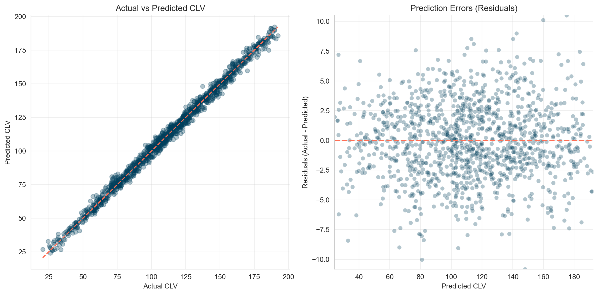
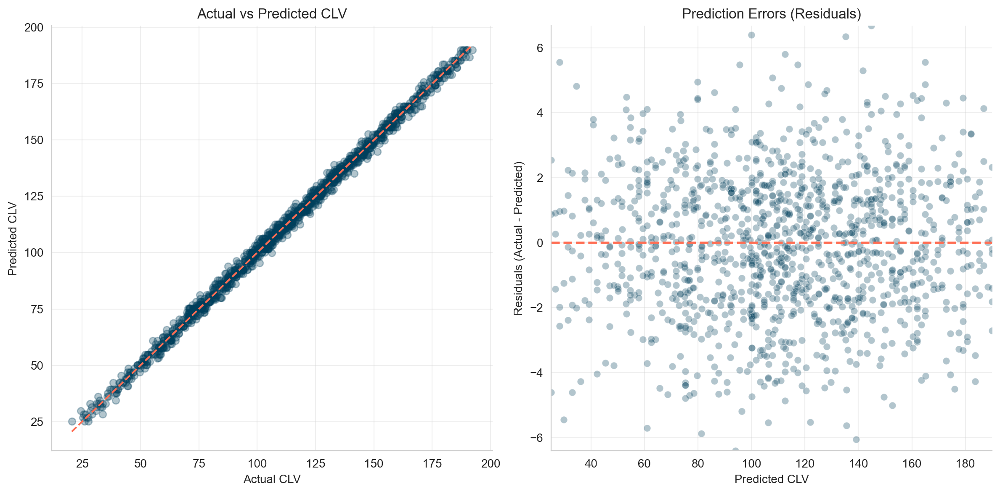
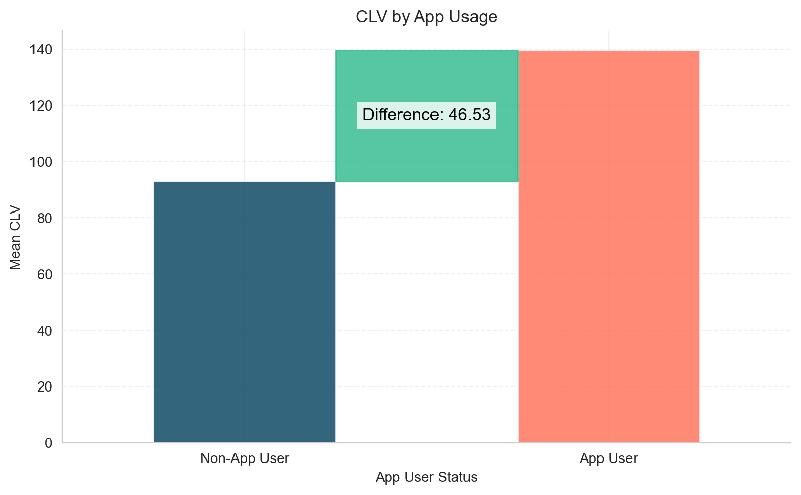
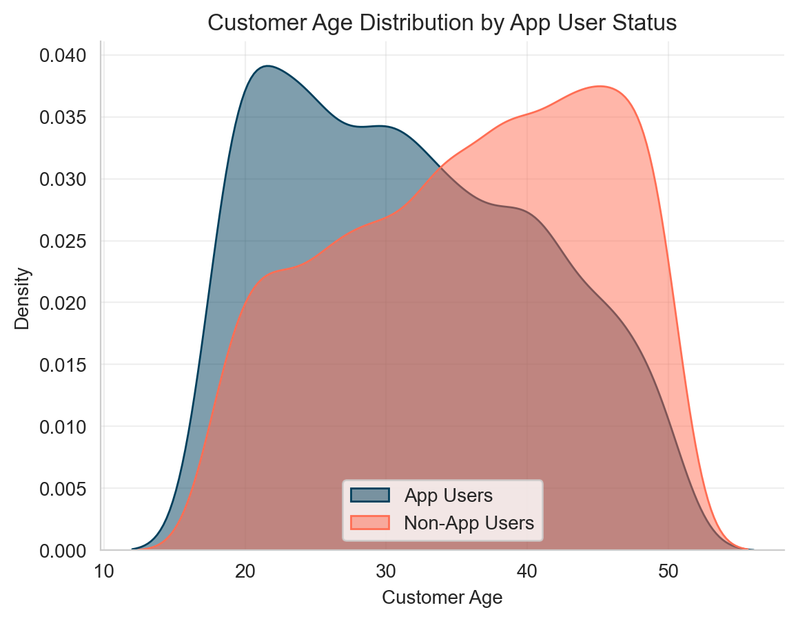
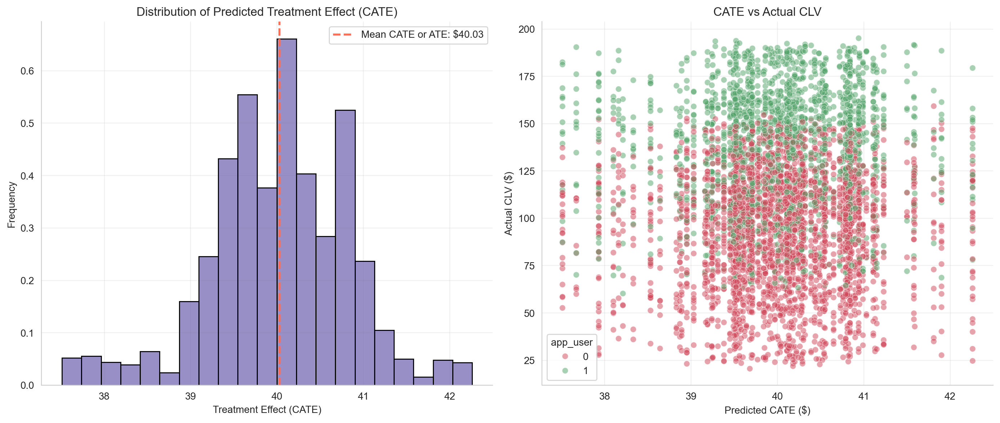

Introduction
In today’s data-driven world, businesses are realizing a crucial truth: correlation is not causation. Just because two metrics move together doesn’t mean one drives the other. Traditional machine learning mostly tells us whether variables move together, but decision-makers usually want to know which variable actually influences the outcome—and by how much. That’s where causal inference comes in.
Initially, I found it challenging to distinguish between predictive models (classical machine learning) and causal models. My initial thought was: if I train a model—say, a linear regression—then the feature coefficients must represent causal effects. For example, if β₁ for x₁ (a binary variable) is 5, I assumed the causal effect of x₁ was 5.
But I later realized I was overlooking something important: confounders. A confounder is a variable that influences both the treatment and the outcome. If you leave it out, your treatment effect estimates are biased. For instance, income may affect both the likelihood of buying insurance (treatment) and health outcomes (outcome). If you could include all confounders—which is rarely possible in practice—then the regression coefficient of a feature would indeed represent its causal effect.
It took me some time to appreciate these differences and the methodological nuances between predictive modeling and causal inference. Let’s unpack how they differ, and where they overlap.
Causality vs Prediction
Causal models aim to answer a powerful question: “What would have happened if we had done something differently?” Instead of just spotting correlations, they uncover what actually causes change.
They go beyond simple forecasting. Predictive models tell you what might happen, but causal models explain why it happens—and what would be different under another action.
In short, causal models reveal which levers truly drive outcomes, enabling decisions that move the needle.
Where Causal Models Are Used
- Marketing → Campaign effectiveness, spend optimization
- Product → Drivers of feature adoption or churn
- Pricing → Impact of price changes
- Operations → Effects of delivery time, staffing, etc.
Businesses don’t just want to know what’s happening—they want to influence it. Causal models make this possible. They’re no longer academic nice-to-haves—they’re a competitive edge.
On the other hand, predictive models use historical data to forecast outcomes. They learn patterns between features (X) and a target (Y), for example:
- Will this user churn?
- What will we sell next month?
- How many orders will this customer make?
But here’s the key: predictive models don’t explain why something happens. If you want to know whether a discount caused a behavior change, you need a causal model.
Causality vs. Prediction in Action
Imagine you run an e-commerce business and want to estimate Customer Lifetime Value (CLV) over 365 days. But why are you really interested in CLV?
- Is it just out of curiosity? Probably not 🙂.
- More likely, you want to increase CLV. If you knew which features of your business or which marketing actions drive it up (or down), you could double down on the right levers.
- Or perhaps you want to measure how much additional CLV a specific marketing action generates. Then you could directly compare that gain with its cost and calculate ROI.
CAC Predicts CLV
Now, suppose you have data on how much you spent to acquire customers (CAC) and their CLVs:
df_cac.head()| customer_id | cac | clv_365 |
|---|---|---|
| 0 | 15.55 | 32.48 |
| 1 | 52.35 | 104.17 |
| 2 | 90.33 | 178.90 |
| 3 | 66.81 | 135.26 |
| 4 | 61.42 | 123.14 |
You train a Linear Regression model on this and get near-perfect results.

Great, right? Not so fast. This is synthetic data where the correlation was intentionally built in. In real life, such a correlation often doesn’t exist. More importantly, a predictive model like this can’t answer: "Does higher CAC cause higher CLV?"
Should you spend more on acquisition just because the model predicts higher CLV with higher CAC? Definitely not.
More Features: Age, Gender, Location, App Usage
You get more customer data: age, gender, urban_loc, app_user , where data looks like this now:
df_customers.head()| customer_id | age | gender | urban_loc | app_user | clv_365 |
|---|---|---|---|---|---|
| 0 | 46 | male | 0 | 0 | 32.48 |
| 1 | 32 | female | 0 | 0 | 104.17 |
| 2 | 25 | female | 1 | 1 | 178.90 |
| 3 | 38 | female | 0 | 1 | 135.26 |
| 4 | 36 | female | 1 | 0 | 123.14 |
You retrain your model and achieve a great predictive score (R2 = 1.00, MSE = 4.62). Errors are normally distributed.

If prediction is your only goal, you’re done. You now know the CLV of each customer.
But stopping here isn’t very actionable. Sure, you can try targeting low-CLV customers with CRM activities—discounts, emails, push notifications, and so on. But the real question is: do these actions actually increase CLV?
If the discount you offer doesn’t lift CLV in the long run, then it’s not worth it. That’s why, if you really want to understand what drives CLV, you shouldn’t stop at prediction. Keep reading 🙂.
Does App Usage Drive CLV?
Let’s say we want to measure the effect of app usage on CLV. If it turns out to be positive, the next logical step would be to invest more in campaigns (e.g., ads) that drive app installs, right?
But here’s the catch: before acting, we need to know the causal effect of app usage on CLV.
Suppose we look at a regression and see that the coefficient for app_user is +19.6. That means app users bring, USD 19.6 more in CLV.
But is that really a causal effect—or just a correlation?
# Feature Importance
importance = pd.DataFrame(
{
"Feature": model_2.feature_names_in_,
"Importance": model_2.coef_,
}
).sort_values(by="Importance", ascending=False)
importance| Feature | Importance |
|---|---|
| app_user | 19.6 |
| urban_loc | 12.4 |
| age | -14.8 |
| gender | -23.8 |
Avg CLV: App Users vs. Non-App Users
Now, let’s make a simple comparison: compare the average CLV of app users vs non-app users. Surprisingly, the difference is USD 46.5.
app_user_mean = df.query("app_user == 1")["clv_365"].mean()
non_app_user_mean = df.query("app_user == 0")["clv_365"].mean()
difference = app_user_mean - non_app_user_mean
So, what’s the true effect—USD 19.6 or USD 46.5? Why does the estimated effect of app usage vary so much?
This matters because it directly affects your marketing decisions.
- If you spend USD 46.5 per app install but the true effect is only USD 19.6, you’re losing money.
- Conversely, if you spend USD 19.6 and the true effect is USD 46.5, you could afford to push even more app installs.
Knowing the causal effect helps you make decisions that actually move the needle.
The Problem: Confounding
Let’s examine the age distribution: younger users are more likely to use the app and tend to have higher CLV.
This is a confounder: a third variable (age) affects both the treatment (app_user) and the outcome (CLV), which can bias our estimate of the app’s effect.

Specifically, age is a confounding variable:
- Younger users are more likely to use the app
- Younger users also tend to have higher CLV
This means that part of the observed effect of app usage is actually due to age, not the app itself.
Causal Models to the Rescue
There are many ways to estimate causal effects:
Here, we’ll use a simple method: the S-learner, a type of Meta-Learner. For learning purposes, we’ll build the estimator from scratch. (Of course, there are ready-to-use implementations in DoWhy and EconML with extra features for checking model accuracy, etc.)
What is an S-Learner?
An S-learner (the “S” stands for Single, because it uses a single model; by contrast, a T-learner uses Two separate models) estimates the Conditional Average Treatment Effect (CATE) as follows:
- Train a standard ML model (e.g., tree-based) on the original data.
- Set
app_user = 1for all users and predict CLV. - Set
app_user = 0for all users and predict CLV again. - The difference between the two predictions gives the individual treatment effects (CATEs).
>>>ouput
Root Mean Squared Error: 2.22
R-squared: 1.00If we add the new prediction columns to our original dataset, it will look like this: we now have the estimated CLV for each individual under both scenarios—using the app or not using the app.
The difference between these two values represents the heterogeneous effect of app usage on CLV for each user.
| customer_id | age | gender | urban_loc | app_user | clv_365 | clv_if_all_app_users | clv_if_all_non_app_users | treatment_effect |
|---|---|---|---|---|---|---|---|---|
| 0 | 46 | male | 0 | 0 | 32.48 | 137.27 | 96.48 | 40.79 |
| 1 | 32 | female | 0 | 0 | 104.17 | 176.62 | 135.78 | 40.84 |
| 2 | 25 | female | 1 | 1 | 178.90 | 179.02 | 138.48 | 40.54 |
| 3 | 38 | female | 0 | 1 | 135.26 | 66.96 | 26.41 | 40.55 |
| 4 | 36 | female | 1 | 0 | 123.14 | 154.23 | 113.94 | 40.29 |
Let’s visualize the results.
- In the left chart, you can see the distribution of treatment effects, centered around USD 40.
- In the right chart, each customer’s actual CLV is shown alongside their hypothetical CLV if their app usage status were reversed: red dots indicate CLV if they were not app users, and green dots if they were app users.

The average of all individual CATEs gives the Average Treatment Effect (ATE)—the expected uplift in CLV per app user on average. In our case, it is USD 40
Conclusion
Using the S-learner approach (essentially a slightly adapted predictive ML model), we estimate the average treatment effect (ATE) of app usage on CLV to be USD 40.
Compare this to:
- Linear regression coefficient: USD 19.6 (underestimates the effect)
- Raw group difference: USD 46.5 (overestimates the effect)
For reference, when we generated the data, the true effect was USD 40, confirming that the S-learner estimate is accurate.
This example highlights the power of causal models: if you want to understand and influence outcomes—not just predict them—they’re essential.
Appendix
Function used to generate the synthetic data:
God is the only true cause. All other causes are instruments through which His will is realized. Fakhr al-Din al-Razi